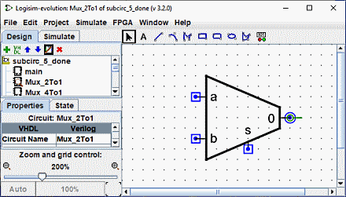
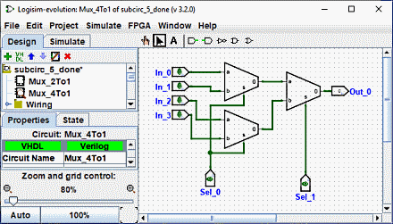
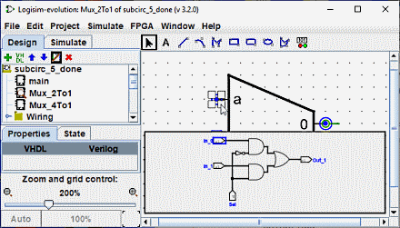

自定义外观
默认外观非常实用，事实上，Logisim 在很长一段时间内都没有其他选项。但是，如果您希望子电路以不同方式绘制，可以选择 | 项目 |→| 编辑电路外观 |，Logisim 的界面将从常规的布局编辑界面切换到绘制电路外观的界面。您也可以点击资源管理器窗格上部工具栏最右侧的图标 ( )。
)。
下面，我们正在编辑 2:1 多路选择器的外观，使其绘制成通常的梯形而非矩形。

将 2:1 多路选择器的外观绘制成上述样式后，4:1 多路选择器的布局将如下所示。

外观编辑器类似于传统的绘图程序，但有一些特殊符号用于指示该外观放入电路布局时如何工作。这些特殊符号无法删除。
-
带有一条线的绿色圆圈称为 锚点（）。每个子电路外观中恰好有一个锚点。电路中的每个组件都有一个标识其位置的点；用户在创建新组件时会看到这一点：鼠标点击只指定一个位置，组件相对于该位置放置（通常主输出位于鼠标点击的位置）。锚点标识了创建子电路时鼠标位置相对于整个绘图的位置。
锚点 还标识了外观的朝向，由锚点线条从圆圈指向的方向指示。将子电路放入布局时，用户可以更改子电路的朝向；锚点的朝向指示了外观的方向。在我们的示例中，锚点朝向东方，而 Mux_4to1 中的每个子电路实例也朝向东方，因此它们都以与 Mux_2to1 外观相同的方向绘制。
-
蓝色圆圈（
 ）和带点的正方形（
）和带点的正方形（ ）是子电路的
）是子电路的端口
。端口的数量与电路中的输入和输出引脚数量完全相同。对应输入的端口绘制为正方形，而对应输出的端口绘制为圆圈。每个端口指示接入该子电路的导线如何对应到子电路布局中的输入或输出引脚。
当您选择一个端口时，Logisim 会通过弹出窗口右下角布局的缩略图指示对应的引脚，其中对应的引脚以蓝色绘制。当所有端口都被选中时，不会发生这种情况。

我们可以使用 Ctrl+鼠标滚轮，或使用工作区左下角的放大镜按钮或滑块来更改图像的缩放比例。当前缩放比例会显示在界面上。
工具栏包含用于添加其他形状的工具，如下所示。某些按键（Ctrl、Alt、Shift）会影响形状的绘制方式。这些按键可以组合使用。
Ctrl：将端点对齐到网格。
Shift：将线条方向限制为 45° 的倍数，或使图形对称（正方形、圆角正方形、圆形）。
Alt：从图形中心绘制。
下面是每个工具的简要介绍：

|
选择工具：选择、移动、复制、粘贴符号。 |

|
文本工具：添加、插入或编辑文本。 |

|
线条工具：创建线段。 |

|
曲线工具：创建二次贝塞尔曲线。第一次 单击并拖动指定线条的起点，第二次 单击并拖动结束线条并设置曲率。在线条上单击会显示三个控制点。按住 Shift 并单击中间控制点，可以强制曲线对称。按住 Alt 并单击中心点，会使曲线穿过鼠标下方的控制点。 |

|
折线工具： 创建一系列连接的线段，每次 单击 开始一条新线段。双击 结束该序列。 |

|
矩形工具： 通过从一个角拖动到对角来创建矩形；按住 Shift 可创建正方形。 |

|
圆角矩形工具： 通过从一个角拖动到对角来创建带圆角的矩形；按住 Shift 可创建带圆角的正方形。 |

|
椭圆工具： 通过从边界框一角拖动到对角来创建椭圆；按住 Shift 可创建圆形。 |

|
多边形工具： 创建任意多边形，每次 单击 开始一条新边。通过 双击、按 Enter 键或 单击 起始顶点来完成形状。 |

|
动态组件： 放置动态组件。单击 后会打开一个窗口，用于选择子电路中的组件。 |
下一节： 调试子电路。